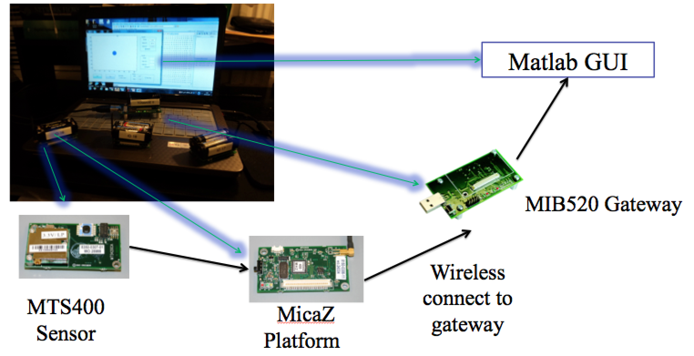
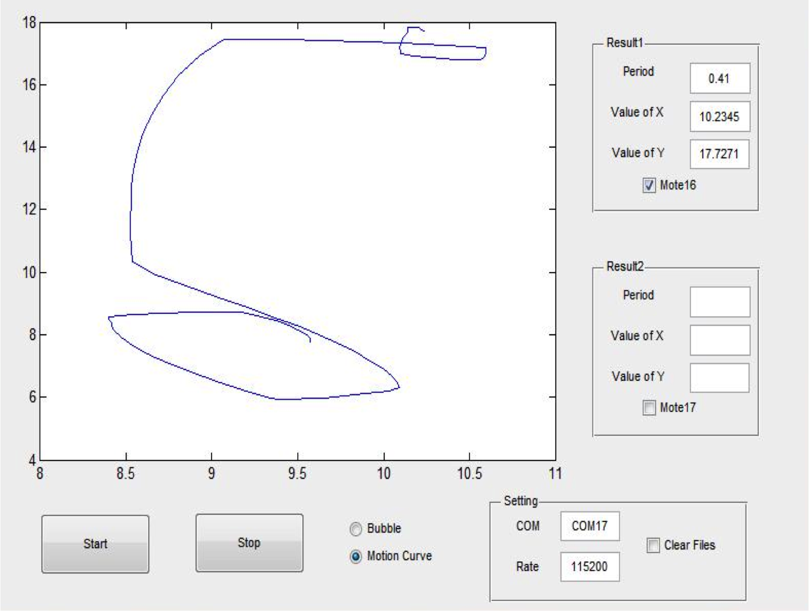
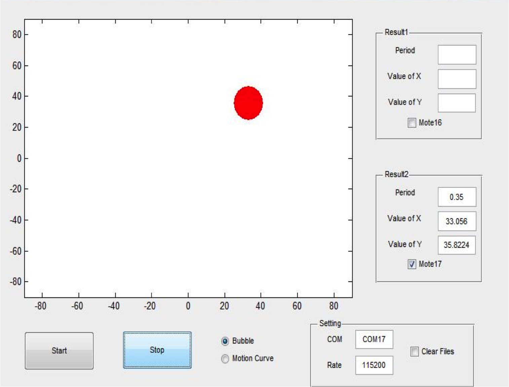

Motion Curves Detection by TinyOS/motes
A TinyOS mote is consist of a MTS400 sensor board, a MicaZ mote and a MIB520 gateway, programming in NesC(kind of Lite-weighted C for embeded system). Really really love these little toys with which I could apply my creation and imagination to build something interesting.
Motivation
Motion Capture as a famous technology is extensive used in military, entertainment, sports, and medical applications, and for validation of computer vision and robotics. In filmmaking, it refers to recording actions of human actors, and using that information to animate digital character models in 2D or 3D computer animation.
A wireless Sensor Network (WSNET) system based on TinyOS consists of spatially distributed autonomous sensors to monitor physical or environmental conditions, such as temperature, sound, vibration, pressure, motion or pollutants and to cooperatively pass their data through the network to a main location. SNET has some characteristics such as small size, ease to use, good ability to withstand harsh environmental conditions and mobility of nodes.
Introduction
In this blog, I will introduce my teammates' and my efforts to exploit the accelerators on TinyOS motes for motion curve.
Since the sensor can collect the acceleration raw data, we design and build up a wireless sensor network with multiple motes, basement and display client. The WSNET can accomplish some basic applications such as gradientor, motion curve capture and motion period detection according to the Dual-axis Accelerometer data. Each mote senses accelerator data, calculates and pack with mode ID, velocity, calibration acceleration and displacement position.
All the calculation will finish by the mote itself. It improves the mobility of motes to other environments and improves the performance of display client, especially when the WSNET is a really big and complicated network. However, it also requires the algorithm we use as simple as possible.
In display client, a friendly matlab GUI will visualize the receive data. According the motion curve and motion period, we can detect mote’s motion. Thus we can also detect a human motion. It can be used in Video Game, Password Authentication and wild animal tracing.
Hardwares
| MPR-Series Mote Hardware Platforms MicaZ | ||
| MCU | Chip | ATMega128L |
| Type | 7.37 MHz, 8 bit | |
| Memory (kB) | 128 | |
| RF Transceiver (Radio) | Radio Frequency (MHz) | 2400 |
| Max. Data Rate | 250 kbits/sec | |
| Default power source | Type | AA, 2× |
| Typical capacity | 2000 (mA-hr) | |
Table 1: Details for Platforms MicaZ
| Dual-axis Accelerometer | |
|---|---|
| Analog Devices | ADXL 202JE |
| Acceleration Range | ±2 g |
| Resolution | 2mg at 60Hz |
| Nonlinearity | 0.2% of full scale |
| Zero g bias level | 2.0mg/ °C from 25°C |
Table 2: Details for Accelerometer on MTS400
Implementation
Mathmetical Model
Algorithms
- Let the mote itself, based on ADC data, calculate the acceleration (in unit $g$) and velocity (in unit $m/s$) and displacement (in unit $m$) and send data back to base station.
- To get accurate results, the accelerometer must work in a high frequency. We managed to let the mote sample every $5 ms$, which is $200 Hz$ in frequency. This is sufficient for regular common applications. The ADXL202 accelerometer has a maximum bandwidth of $6 kHz$, the frequency is mainly constrained by the calculation speed of MCU.
- In order to solve the noise (instability) problem, we set a threshold, if $|a| < threshold $, force $v$ to zero.
- The result of calculation is a 3 floating point number, and sending packet is binary. So after calculation, a more procedure is applied to convert floating point numbers to binary.
GUI in MatLab
For the reasons that the TinyOS motes are lite-weighted embeded devices and lack of powerful processors and memories, we need to come up with a alogrithm as simple as possible.From classical physics, we know the relationship between acceleration, velocity and displacement:
$$ v(t)=\int_0^t a(t)\, \mathrm{d}x $$ $$ s(t)=\int_0^t v(t)\, \mathrm{d}x $$As long as we know a(t) , the displacement can be got easily by integral. In machine realm, the integral is achieved by dividing itself into sum of many little segments: $$ v[n]=\sum_{i=0}^{n} a[n]\, \Delta t $$ $$ s[n]=\sum_{i=0}^{n} v[n]\, \Delta t $$
In our wireless sensor network (WSN), each mote is attached to a sensor board with an 2-axis accelerometer that can detect the acceleration and convert it into ADC value. Therefore, our decsion is to use this simple integral algorithm to capture the location of the mote each time spot according to the acceleration data from accelerometers.
Software layer is implemented by nesC code:
Figure 1: Flow Chart for the Algorithm
The WSN cannot afford high frequency (~$100Hz$) data sending and receiving, our experiment confirmed this and if the frequency exceeds some certain value, a lot of error packet is inevitable. So we set a counter to pick the data for sending and reduced transmit frequency to ~$10Hz$.
In base station, the received data will be $a_x,a_y,v_x,v_y,s_x,s_y$, which can be used in many applications. We use acceleration to determine the tilt angel of the mote, displacement to draw the path of mote and the period of motion. Based on xlisten.m, we built GUI for plotting and reading data.
In order to demonstrate our project more clearly and easily, we use Matlab to design and accomplish a GUI. GUI design of Matlab is friendly to programmer because of using handle to control the figures. In our GUI, we divide the panel to 4 main parts, nearly the axes which is used for showing the motion of our motes, the button group which contains the start and stop button, the setting part on which we can set some configuration of our COM and rate, and the result window that is used for indicating some calculating data of our motes.
For more details: Firstly, start and stop buttons are easy for us to control our demonstration. What`s more, we can easily choose what to draw on the axes and which mote we want to choose by using the radio buttons and checkbox buttons. Also we can set our COM and rate as we wish. At last, the result window can let us comfortably observe the data of our each mote and the motion period.
Results
Setting:
- COM: specify com port to listen to.
- Rate: specify baudrate.
- Bubble: change to gradienter view.
- Motion Curve: change to motion path view .
- Checkbox for Motes: choose the motes you want to focus(support multiple motes).
Motion Curve

Bubble Gradientor

Figure 2: Result of Motion Curve
Coordinate data calculated by mote itself and shown on the screen using Matlab.
Value of X: Displacement in x-axis
Value of Y: Displacement in y axis
Period: Estimated motion period
Figure 2: Result of Gradientor Simulation
Tilt angel calculated from acceleration data and shown on the screen using Matlab.
Value of X: tilt in x-axis $[-90°,90°]$
Value of Y: tilt in y-axis $[-90°,90°]$
Period: Estimated motion period
Future
As far as now, the support to multiple motes is not perfect, mainly due to the interference of signals in high frequency.
Limited by 2-axis accelerometer, we can only detect 2-dimension motion and period. Ifwe have 3-axis accelerometer combined with gyroscope, we can get the coordinate and direction with high-accuracy, and under this circumstance motion capture system is just around the corner. Another interesting idea is to cooperate with GPS system as an a complement. If there is no GPS signal, motion capture system will help to determine the coordinate and direction and implement seamless navigation everywhere.
Other Posts
- Oct 2014 » How to Build Your Own Website by AWS and Nginx
- Oct 2014 » Python Solutions for Coding Questions
- Sep 2014 » A Color Outlier Algorithm Based on the Markov Model
- Aug 2014 » The Control Center for Intelligent Lighting System
- July 2014 » Cyber Security Learning Schedule for the very Beginner
comments powered by Disqus